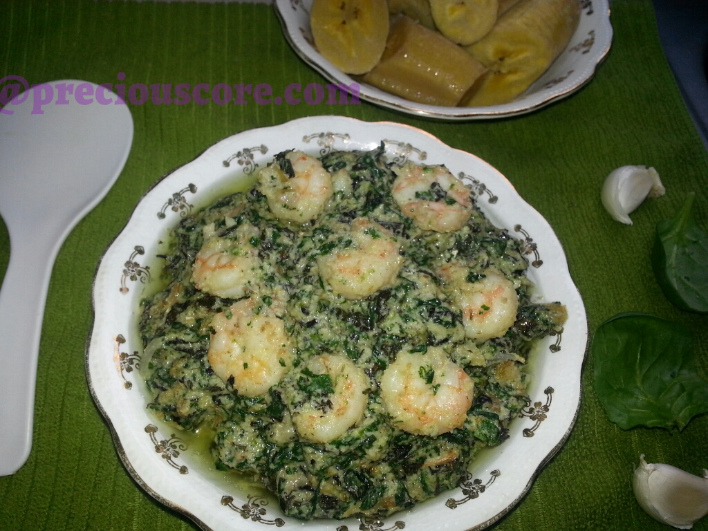

Ndole

Description
This meal which originates from the Littoral region in Cameroon consists a perfect culinary marriage
of vegetable (bitterleaf) and protein (groundnuts/peanuts).
Ingredients
- 2 cups of peeled groundnuts (also called called peanuts)
- 3 cups of bitterleaf and/or spinach
- Half teaspoon of baking SODA (for blanching vegetables)
- ¼ cup crayfish- coarsely blended
- 2 pounds of boiled beef/beef feet/smoked fish/stock fish/shrimps
- 5 cloves of garlic
- 1 inch of ginger
- 1 maggi crevette (crayfish seasoning cube)
- 2 regular seasoning cubes (maggi or knorr)
- 1 large onion
- 1 cup of vegetable oil
- 1 habanero pepper (totally optional)
Steps
- Put your groundnuts in a pot and let it boil
- If using shrimps, season them with a little salt (and white pepper if you wish) and set aside to marinate.
- Chop up your spinach.
- Start the boiling and blanching process. Put water in a pot to boil and put in salt and baking soda.
The baking soda helps the vegetables retain their green colour just like "Akangwa" or "Kangwa" (lime stone)
- Use the tip of your finger to check the bitterleaf for softness.
- If soft enough, add in the spinach and turn off the stove. Let it sit for TWO minutes
- Pour vegetable onto a strainer and immediately run cold water on it. If you do not do this,
the heat will continue to cook the vegetables much to your disadvantage
- When you have rinsed thoroughly, use both hands to roughly kill the vegetables then you squeeze and keep in a bowl.
Note: slightly more vegetable than the amount below made it to the pot.
- Peel garlic and ginger and chop half of your onions then put in a blender plus
your boiled groundnuts and pepper (if using).
- Good things are happening here. Go to the pot which contains your boiled meat and/or fish and its stock.
Here is my pot of stock fish AKA stocky. When you love something so much, you give it a pet name. So for the love of stock fish.
In Cameroon, stock fish is locally called, "Mukanjo."
- Add your blended groundnuts and bring to boil. Let the aroma bless your home!
- Add in crayfish and stir
- Then let the veggies go in
- Give that a good mix, let it simmer for about 5 minutes and turn off the heat.
- Add maggi crevette, the crayfish seasoning cube.
- Add the left over half onion? Chop it up. Put oil to heat up in a skillet and saute the onions.
- Add in the shrimps
- The shrimps are done when they turn pink. Add them to your pot of vegetable and groundnuts
- Ndole is ready!
Back to home